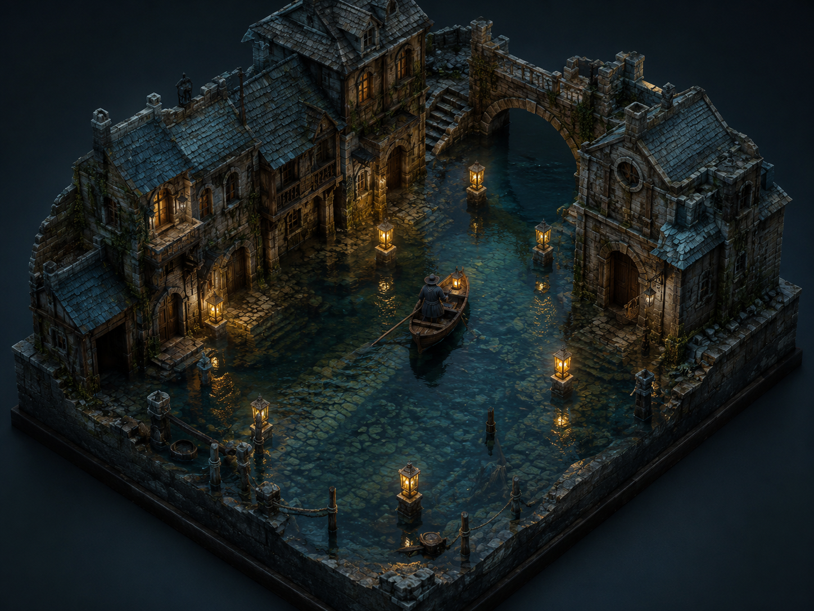

Pick up where you left off.
Three worlds, all of them breathing, or start a fourth.
The Undersong
A drowned god still sings beneath the harbour, and the city tunes itself to the verse.


Painterly, tidal, restrained.
Weathered maritime realism, visible brushwork, slate and sea-glass colour, one warm practical light, fog with real depth.
Illustrated, weathered, graphic.
Dry-brush pigment, charcoal contour, weathered paper, sea-glass blue and one lantern-orange accent.
 v2Cold-water realism4 Jun
v2Cold-water realism4 Jun v1First world image19 May
v1First world image19 MayChange the world's visual language
How should The Undersong look?
Pick a starting look. Every image this world makes — characters, locations, shots — follows it until you change it. Nothing here is permanent: you can edit the words on the next screen, or set a different look any time from Art direction.
PRESET
Everything you produce pulls from these sheets: change one here and it changes everywhere.

Maren Kest
Tide-caller. She hears the verse under the harbour and pulls the water where it needs to go.


What has changed about her?
The sheet, field by field.

Maren Kest
multiple: Main photo + Character sheet
Maren Kest
SELECTEDUPLOADED×FROM WORLD×SELECTED01SELECTED02SELECTED03SELECTED04
not on Mistral AI
Canon
Who collects rent in the Drowned Quarter?
Say what should be true.
The entry, field by field.
Tide-calling
Maren Kest
CANON-031 · the bells
Tone · quiet dread
Locations
Every place is a sheet, look, sound, customs. Scenes inherit them; generations cite them.
The Drowned Quarter
The Drowned Quarter

 PANEL 01 - ESTABLISHING VIEWPANEL 02 - REVERSE ANGLE
PANEL 01 - ESTABLISHING VIEWPANEL 02 - REVERSE ANGLEThe cut
2:40 · 13 of 15 shots covered · assembled from accepted takes onlySC 1 · 0:22 SC 2 · 0:38
SC 2 · 0:38 SC 3 · 0:30
SC 3 · 0:30 SC 4 · 0:13
SC 4 · 0:13Audio
3 tracks in the cut · voices come from the sheetsExports
renders of the cut · the cut itself stays the sourceActivity
3 running · 1 needs you · everything Arke is doing, and what it costsFactions
Who wants what, and what they'd never admit. Scenes borrow their pressure.
Artifacts
Recordings, documents and references: filed against the world, attachable to any generation.
Productions
Three formats drawing from one world. Change a character once and it lands in all of them.
nothing leaves this machine except the dispatches you approve
Every world starts as a name.
Give yours one. Characters, canon and productions grow from there, and stay consistent because they share it.


The Ferryman
Refuses payment in coin, only in secrets. Drafted from your sentence; everything below is proposed, not settled.
Undertow
Tuesday. Here's where you left off.
13 of 15 shots covered · 2 need youCast
Here's where you left off.
6 chapters drafted · chapter 7 in hand · 21,400 wordsScene 4 · the verse rises
4 shots + 2 inserts · 28.0sMaren · sheet v4
Tone · quiet dread

sheets: Maren v4 · Sereth v2 · The Vigil
audition against the track before it lands in the cut
Talk it out first.
Maren
prop · Sereth's lantern
START · SHOT 14, LAST FRAME


Describe the place. It pushes back.
Just the fields.
Find the spine together.
Find the spine together.
Seven nights, and the one she is looking for
The missing night
The answer from inside
Four shots, and the ending nothing covers
Three shots still hold. Two need looking at.
Four shots, and what they will cost
Two panels are out of date, not four
Pick a panel to change it

What is this season about?
Three things that change, and where they change
What this season does differently.
Start talking. It starts existing.
Write it down. It starts existing.
What does the song want, and who answers it?

Day one. The world came with you.
No graph, no schema, nothing to configure. Low Water opens with everything The Undersong knows. Talk the story out and Arke will propose acts, chapters and the first choices — nothing lands until you accept it.
Find the spine, then the forks.
Tuesday. Here's where you left off.
exits · bray_trust 44 · lamp_oil 1
song_shared = true · playthrough
→ The Song Answers
delayed · Bray's ch 2 greeting cools
→ Out by Dawn
← The Bell Room · stair route
← Cold Landing · bridge, accepted
kept · lamp_oil
expires · bell_echo_heard · scene-local
requires · bray_trust ≥ 40 at the causeway
no conditions · always available
What the game knows at this choice
Chapter 1 · Low water
"Say nothing" goes nowhere.
Thursday. Here's where you left off.
chapter 1 · story sound · media 46% · 2 continuity failures
leaves for · interaction "Quiet the bells"
reused by · 4 of 11 routes · preload group A
1–2 quieted → partial
cracked bell hit → collateral
timer expires → timed_out
sereth_woken = true on collateral
What the branch structure costs.
Every branch the audience never merges back from is video to generate, review and store.
Ship it from here.
An interactive experience publishes like a film, not like software. Pick a runtime — the package is the same reviewed, deterministic bundle.
clips/ · 34 files · 4.2 GB
audio/ · captions/ · images/
interactions/ · 3 templates
player/ · v1.8 · versioned manifest
Keep writing…
The Undersong
A drowned god still sings beneath the harbour, and the city tunes itself to the verse.